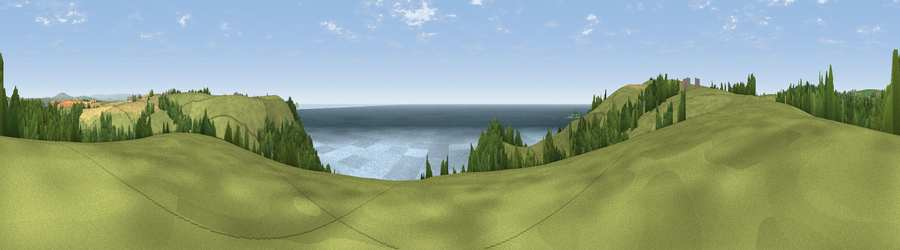

Viewpoint near Seaton
#1761 in England · top 4% of its area beats it · near SeatonWhere it is
The exact computed spot (SX 29825 54875). Click the marker for map links.
The view, rendered

A 360° render of this exact spot computed from the terrain model, tree cover and land cover — summer colours, afternoon light, calibrated against photographs of famous viewpoints. Real trees, hedges and buildings will differ in detail.
The panorama
Grey silhouette: terrain skyline in each direction (720 bearings, Earth curvature and refraction included). Dashed green: skyline with trees (+15 m) and buildings (+8 m) as obstacles. Blue strip: how far the ground is visible on each bearing.
Where the view opens
Wedge length = distance to the farthest visible ground on that bearing (vegetation-aware). Rings at 10, 25 and 50 km.
What fills the view
44% grassland · 34% water · 17% woodland · 5% cropland
Angular shares of the visible panorama (visual magnitude), not map area. Landscape diversity 0.52 (0–1 Shannon).
Key numbers
More beautiful places nearby
The staircase of upgrades: each row has a higher view potential than everything closer. Driving times are estimates from straight-line distance, calibrated against real road routing — check an actual route before setting out.
| Place | Direction | Drive | Score |
|---|---|---|---|
| Viewpoint near Seaton | W · 1 km | ~3 min | 81.1 |
| Viewpoint near Downderry | ESE · 1 km | ~4 min | 81.5 |
| Viewpoint near Downderry | E · 4 km | ~9 min | 83.5 |
| Viewpoint near Polperro | WSW · 11 km | ~21 min | 83.7 |
| Pencarrow Head | WSW · 15 km | ~27 min | 86.0 |
| Viewpoint near Stenalees | W · 30 km | ~47 min | 88.0 |
| Viewpoint near Crackington Haven | NNW · 43 km | ~63 min | 88.1 |
| Viewpoint near Combe Martin | NNE · 98 km | ~122 min | 88.9 |
50.36910, -4.39430 · source: screening · position refined by local search. Computed location — check access rights before visiting.